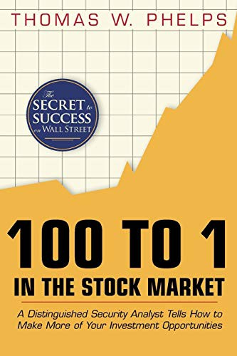

托马斯·W·菲尔普斯（Thomas W. Phelps）是华尔街一位资深的分析师与专栏作家，曾长期为《巴伦周刊》（Barron's）和《华尔街日报》撰写投资评论，后来担任Scudder, Stevens & Clark投资公司的合伙人。他在职业生涯中观察到一个令人瞩目的现象：在1932年至1971年的近四十年间，美国股市中至少有365只股票实现了百倍以上的回报。这些百倍股并非来自冷门的投机品种，而是分布在制药、零售、保险、食品、化工等各个行业中那些经营稳健、持续增长的公司。1972年，菲尔普斯将这些发现汇集成书，出版了《股市百倍股》（100 to 1 in the Stock Market），系统性地回答了一个问题：什么样的股票能涨一百倍，投资者又该如何参与这种增长？
菲尔普斯的核心论点可以概括为四个字："买对持久"（Buy right and hold on）。他认为，投资者最大的敌人不是选错了股票，而是拿不住好股票。书中详细记录了那些百倍股的共同特征：它们大多拥有可持续的竞争优势、优秀的管理层、充裕的再投资空间以及能够长期复利增长的商业模式。菲尔普斯指出，以年化26%的速度增长，一只股票在大约十八年后就能实现百倍回报——这并不需要每年都有惊人的增长率，关键是增长的持续性与稳定性。他还特别强调了"税后复利"的力量：频繁交易不仅产生交易成本，更会触发资本利得税，从而大幅侵蚀长期收益。投资者若能找到一家优秀的公司并长期持有，让资本在税前基础上复利增长，最终的回报将远超频繁换手的策略。
这本书在出版后曾一度绝版长达数十年，在旧书市场上一册难求，价格被炒至数百美元。直到二十一世纪初，价值投资圈的重新发掘才使它再度进入公众视野。查克·阿克雷（Chuck Akre）——以"阿克雷三脚凳"框架闻名的基金经理——公开表示，《股市百倍股》是对他投资生涯影响最深的书籍之一，正是这本书促使他将投资策略聚焦于寻找具有高再投资回报率的复利机器。克里斯托弗·梅耶尔（Christopher Mayer）后来撰写了《百倍股》（100 Baggers），作为对菲尔普斯研究的当代延续，将研究时间范围扩展到1962年至2014年，验证了菲尔普斯的核心结论在半个世纪后依然成立。
《股市百倍股》的价值不仅在于其历史数据的翔实，更在于它对投资心理的深刻洞察。菲尔普斯认为，阻碍投资者获得百倍回报的最大障碍，是人类根深蒂固的短期思维与对波动的恐惧。一只最终涨了一百倍的股票，在其上涨过程中必然经历过多次三成甚至五成以上的回调，多数投资者会在恐慌中卖出，然后在更高的价格买回，或者干脆错过后续的涨幅。菲尔普斯的建议朴素而有力：与其试图做出无数次正确的短期交易决策，不如把精力集中在做出少数几次正确的长期投资决策上。这一理念与沃伦·巴菲特"打孔卡"式的集中投资哲学、查理·芒格"坐等投资法"的主张一脉相承，构成了长期价值投资最坚实的思想基础之一。